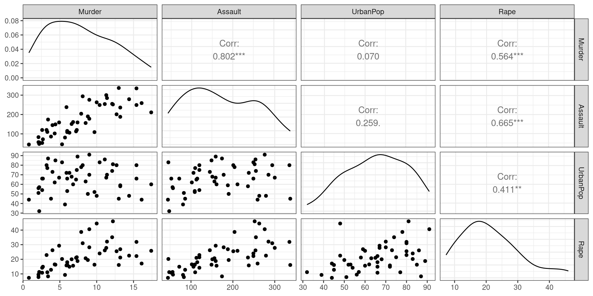
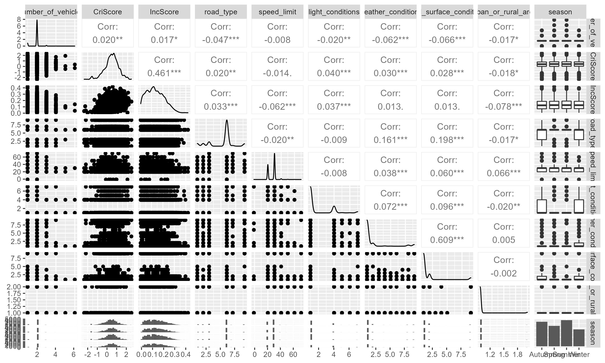
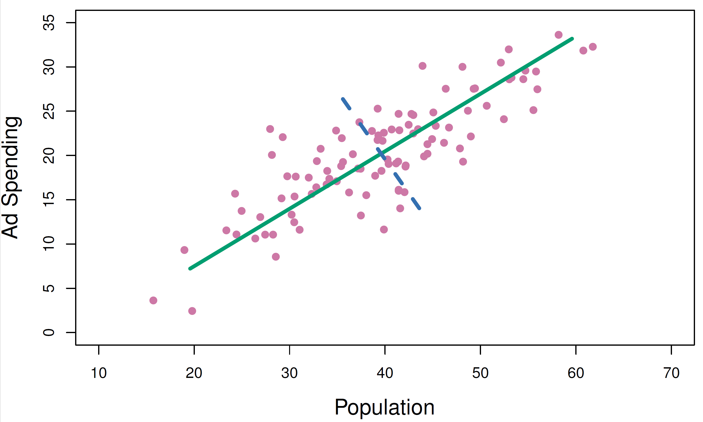
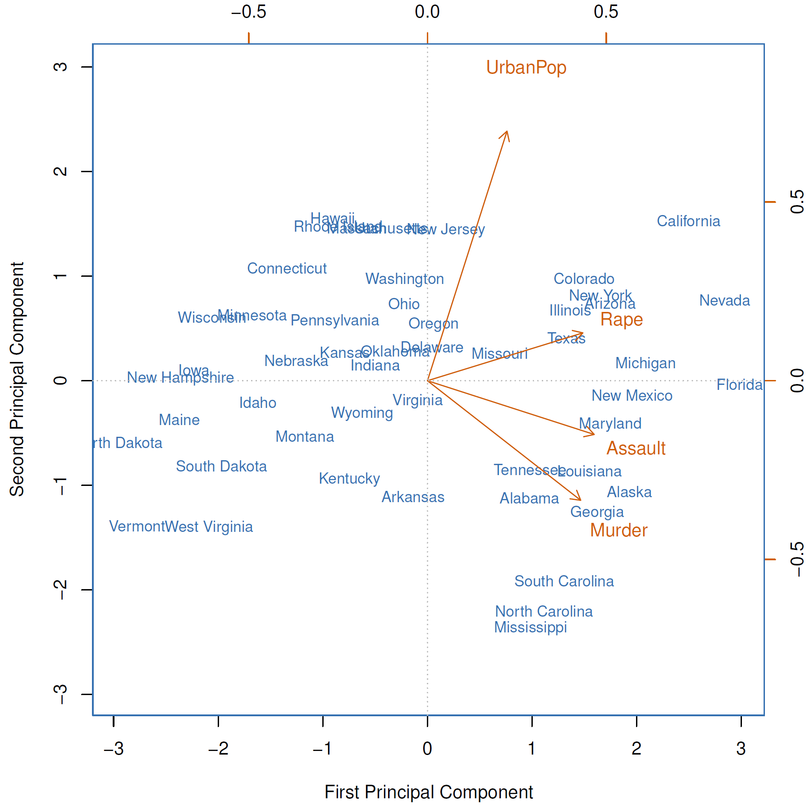

🗓️ Week 08:
Principal Component Analysis
PCA
11/18/22
Unsupervised Learning
(Quick recap)
Comparison
Supervised Learning
- We want to predict \(Y\)
| X1 | X2 | X3 | X4 | X5 | Y |
|---|---|---|---|---|---|
| 0.36 | 9.30 | 0.59 | 0.00 | 0.89 | A |
| 0.81 | 6.59 | 1.56 | 0.01 | 1.27 | A |
| 0.22 | 0.78 | 1.13 | 0.01 | 3.77 | C |
| 0.10 | 6.01 | 1.06 | 0.00 | 0.50 | C |
| 0.74 | 2.52 | 1.30 | 0.01 | 3.72 | C |
| 0.93 | 3.72 | 0.72 | 0.00 | 4.37 | A |
| 0.69 | 0.99 | 0.85 | 0.01 | 3.96 | C |
| 1.00 | 1.02 | 1.20 | 0.00 | 1.43 | B |
| 0.39 | 3.26 | 0.62 | 0.01 | 4.82 | C |
Unsupervised Learning
- We work with \(X\) only
| X1 | X2 | X3 | X4 | X5 | Y |
|---|---|---|---|---|---|
| 0.36 | 9.30 | 0.59 | 0.00 | 0.89 | - |
| 0.81 | 6.59 | 1.56 | 0.01 | 1.27 | - |
| 0.22 | 0.78 | 1.13 | 0.01 | 3.77 | - |
| 0.10 | 6.01 | 1.06 | 0.00 | 0.50 | - |
| 0.74 | 2.52 | 1.30 | 0.01 | 3.72 | - |
| 0.93 | 3.72 | 0.72 | 0.00 | 4.37 | - |
| 0.69 | 0.99 | 0.85 | 0.01 | 3.96 | - |
| 1.00 | 1.02 | 1.20 | 0.00 | 1.43 | - |
| 0.39 | 3.26 | 0.62 | 0.01 | 4.82 | - |
How is it different?
Supervised Learning
We have historic \(X\) and \(Y\) data
Our main goal is to predict future values of \(Y\)
Algorithms fit the data and supervise themselves objectively (e.g.: residuals)
We can validate how well the model fits training data and how it generalises beyond that.
Unsupervised Learning
We only have \(X\) data
The main goal is to observe (dis-)similarities in \(X\)
There is no \(Y\) variable to “supervise” how models should fit the data
Validation is a lot more subjective. There is no objective way to check our work.
Example: USArrests
What the data looks like
- How to visualise this data?
| Murder | Assault | UrbanPop | Rape | |
|---|---|---|---|---|
| Alabama | 13.2 | 236 | 58 | 21.2 |
| Alaska | 10.0 | 263 | 48 | 44.5 |
| Arizona | 8.1 | 294 | 80 | 31.0 |
| Arkansas | 8.8 | 190 | 50 | 19.5 |
| California | 9.0 | 276 | 91 | 40.6 |
| Colorado | 7.9 | 204 | 78 | 38.7 |
| Connecticut | 3.3 | 110 | 77 | 11.1 |
| Delaware | 5.9 | 238 | 72 | 15.8 |
| Florida | 15.4 | 335 | 80 | 31.9 |
| Georgia | 17.4 | 211 | 60 | 25.8 |
| Hawaii | 5.3 | 46 | 83 | 20.2 |
| Idaho | 2.6 | 120 | 54 | 14.2 |
| Illinois | 10.4 | 249 | 83 | 24.0 |
| Indiana | 7.2 | 113 | 65 | 21.0 |
| Iowa | 2.2 | 56 | 57 | 11.3 |
| Kansas | 6.0 | 115 | 66 | 18.0 |
| Kentucky | 9.7 | 109 | 52 | 16.3 |
| Louisiana | 15.4 | 249 | 66 | 22.2 |
| Maine | 2.1 | 83 | 51 | 7.8 |
| Maryland | 11.3 | 300 | 67 | 27.8 |
| Massachusetts | 4.4 | 149 | 85 | 16.3 |
| Michigan | 12.1 | 255 | 74 | 35.1 |
| Minnesota | 2.7 | 72 | 66 | 14.9 |
| Mississippi | 16.1 | 259 | 44 | 17.1 |
| Missouri | 9.0 | 178 | 70 | 28.2 |
| Montana | 6.0 | 109 | 53 | 16.4 |
| Nebraska | 4.3 | 102 | 62 | 16.5 |
| Nevada | 12.2 | 252 | 81 | 46.0 |
| New Hampshire | 2.1 | 57 | 56 | 9.5 |
| New Jersey | 7.4 | 159 | 89 | 18.8 |
| New Mexico | 11.4 | 285 | 70 | 32.1 |
| New York | 11.1 | 254 | 86 | 26.1 |
| North Carolina | 13.0 | 337 | 45 | 16.1 |
| North Dakota | 0.8 | 45 | 44 | 7.3 |
| Ohio | 7.3 | 120 | 75 | 21.4 |
| Oklahoma | 6.6 | 151 | 68 | 20.0 |
| Oregon | 4.9 | 159 | 67 | 29.3 |
| Pennsylvania | 6.3 | 106 | 72 | 14.9 |
| Rhode Island | 3.4 | 174 | 87 | 8.3 |
| South Carolina | 14.4 | 279 | 48 | 22.5 |
| South Dakota | 3.8 | 86 | 45 | 12.8 |
| Tennessee | 13.2 | 188 | 59 | 26.9 |
| Texas | 12.7 | 201 | 80 | 25.5 |
| Utah | 3.2 | 120 | 80 | 22.9 |
| Vermont | 2.2 | 48 | 32 | 11.2 |
| Virginia | 8.5 | 156 | 63 | 20.7 |
| Washington | 4.0 | 145 | 73 | 26.2 |
| West Virginia | 5.7 | 81 | 39 | 9.3 |
| Wisconsin | 2.6 | 53 | 66 | 10.8 |
| Wyoming | 6.8 | 161 | 60 | 15.6 |
EDA with our friend the ggpairs plot
When you have too many features…
🚴 data from a cycling accident dataset we have compiled
When ggpairs becomes impractical
- If we have \(p\) features, there will be \(\frac{p \times (p - 1)}{2}\) different pair plots!
- Think about it:
- 10 features -> 45 pair plots
- 100 features -> 4950 pair plots
- 1000 features -> 499500 pair plots
(nearly 500k combinations!)
When you have too many features…
… you might want to reduce the dimensionality of your dataset
Tip
What if I told you you can reduce a matrix of 10 features into just 2?
PCA
Principal Component Analysis
What is PCA?
Let’s start with terminology:
- Principal Component Analysis (PCA) recombines the matrix of features \(\mathbf{X}\)
- If \(\mathbf{X}\) has \(n\) observations and \(p\) features (\(n \times p\)), PCA will produce a new \(n \times p\) matrix \(\mathbf{Z}\)
- Instead of “features” or “predictors”, we call these new columns principal components
- You might be thinking: 🤔 “wait, didn’t you just say that PCA would help to reduce the number of features?!”
- The thing is: because of the way this matrix is constructed, it is often enough to just use the first few columns of \(\mathbf{Z}\).
The first principal component
- The first column of \(\mathbf{Z}\) is a linear combination of the \(p\) features of \(\mathbf{X}\):
\[ Z_1 = \phi_{11}X_1 + \phi_{21}X2 + \ldots + \phi_{p1}X_p \]
subject to:
\[ \sum_{j=1}^p \phi_{j1}^2 = 1 \]
- We refer to the elements \(\phi_{11}, \phi_{21}, \ldots, \phi_{p1}\) as the loadings of the first principal component.
- We can also refer to them collective, as the loading vector \(\phi_1 = (\phi_{11}, \phi_{21}, \ldots, \phi_{p1})\).
- Each one of the new elements, say \(z_{11}\) are referred to as scores
A closer look at the optimisation task:
\[ \begin{eqnarray} &\operatorname{maximize}_{\phi_{11}, \ldots, \phi_{p1}}&\left\{\frac{1}{n}\sum_i^{n}\left(\sum_i^p{\phi_{j1}x_{ij}}\right)\right\} \\ &\text{subject to} &\\ &&\sum_{j=1}^p \phi_{j1}^2 = 1 \end{eqnarray} \]
- In practice, this maximizes the sample variance of the \(n\) values of \(z_{i1}\)
- Collective, the loading vector \(\phi_1\) points to the direction of largest variance in the data
- We will see an example soon!
The second principal component
- As I said, \(\mathbf{Z}\) has \(p\) dimensions. We only talked about the first one.
- The second column of \(\mathbf{Z}\) is also linear combination of the \(p\) features of \(\mathbf{X}\):
\[ Z_2 = \phi_{12}X_1 + \phi_{22}X2 + \ldots + \phi_{p2}X_p \]
subject to:
\[ \sum_{j=1}^p \phi_{j2}^2 = 1 \]
but also:
- \(\phi_2\) should be orthogonal to \(\phi_1\)
Example of two PCs
- You will find this as Figure 6.14 of our Textbook
Example: USArrests
📹 YouTube Recommendation
- 3Blue1Brown is fantastic! Do check it out.
- The video below helps to visualize how linear matrix transformations work
What’s Next
- I will show you your Summative 02!

DS202 - Data Science for Social Scientists 🤖 🤹